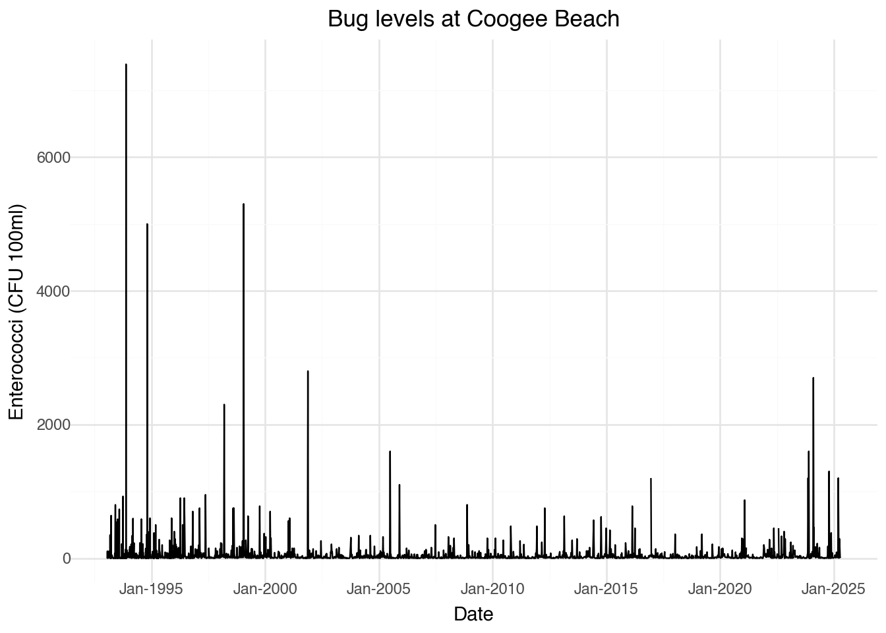

import os
# Set the working directory
os.chdir("/Users/jenrichmond/Documents/positron/pydytuesday-project/Week20/")
# Check it's set correctly
print(os.getcwd())/Users/jenrichmond/Documents/positron/pydytuesday-project/Week20Why are file paths so annoying? There is no here package so here I am using os.chdir() to set a working directory. os doesn’t need to be installed, it somes packaged with Python.
import os
# Set the working directory
os.chdir("/Users/jenrichmond/Documents/positron/pydytuesday-project/Week20/")
# Check it's set correctly
print(os.getcwd())/Users/jenrichmond/Documents/positron/pydytuesday-project/Week20Two ways of reading Tidy Tuesday data. pydytuesday.get_date() downloads all the files into your working directory and then you can read them manual. Alternatively, pd.read_csv() will take the URL of the data on github.
import pydytuesday
import pandas as pd
from plotnine import ggplot, aes, geom_line, theme_minimal, labs, geom_hline, scale_x_datetime
# Option 1: Download files from the week, which you can then read in locally
pydytuesday.get_date('2025-05-20')
# right click on file in Explorer, copy relative path
w = pd.read_csv("water_quality.csv")
# Option 2: Read directly from GitHub and assign to an object
water = pd.read_csv('https://raw.githubusercontent.com/rfordatascience/tidytuesday/main/data/2025/2025-05-20/water_quality.csv')Trying to fetch README from: https://raw.githubusercontent.com/rfordatascience/tidytuesday/refs/heads/main/data/2025/2025-05-20/readme.md
Successfully fetched README from: https://raw.githubusercontent.com/rfordatascience/tidytuesday/refs/heads/main/data/2025/2025-05-20/readme.md
Downloading BeachwatchMap.png...
Successfully saved BeachwatchMap.png to /Users/jenrichmond/Documents/positron/pydytuesday-project/Week20/BeachwatchMap.png
Downloading meta.yaml...
Successfully saved meta.yaml to /Users/jenrichmond/Documents/positron/pydytuesday-project/Week20/meta.yaml
Downloading water_quality.csv...
Successfully saved water_quality.csv to /Users/jenrichmond/Documents/positron/pydytuesday-project/Week20/water_quality.csv
Downloading weather.csv...
Successfully saved weather.csv to /Users/jenrichmond/Documents/positron/pydytuesday-project/Week20/weather.csvRenaming the big enterococci variable as bugs, inplace= True makes the rename apply to the dataframe. Note in python is it ‘old’ : ‘new’, opposite to R rename new = old.
Like: water <- water |> rename(bugs = enterococci_cfu_100ml)
water.rename(columns={'enterococci_cfu_100ml': 'bugs'}, inplace=True)I don’t really remember why this columns function doesn’t require () ?? My notes say…
df.columns df.shape df.info df.describe() df.head()
I don’t know why the first 3 don’t need brackets but describe and head do ??
Like names(water)
water.columnsIndex(['region', 'council', 'swim_site', 'date', 'time', 'bugs',
'water_temperature_c', 'conductivity_ms_cm', 'latitude', 'longitude'],
dtype='object')Like: unique(water$swim_site)
water.swim_site.unique()array(['Windsor Beach', 'Hayes Street Beach', 'Northbridge Baths',
'Fairlight Beach', 'Yarramundi Reserve', 'Little Manly Cove',
'Chiswick Baths', 'Dawn Fraser Pool', 'Rose Bay Beach',
'Camp Cove', 'Callan Park Seawall', 'Tambourine Bay',
'Forty Baskets Pool', 'Chinamans Beach', 'Greenwich Baths',
'Parsley Bay', 'Watsons Bay', 'Gurney Crescent Baths',
'Darling Harbour', 'Clontarf Pool', 'Cabarita Beach',
'Edwards Beach', 'Woodford Bay', 'Penrith Beach', 'Balmoral Baths',
'Manly Cove', 'Woolwich Baths', 'Davidson Reserve',
'Clifton Gardens', 'Murray Rose Pool', 'Nielsen Park',
'Newport Beach', 'Mona Vale Beach', 'Avalon Beach', 'Palm Beach',
'Bilgola Beach', 'Bungan Beach', 'Whale Beach',
'South Cronulla Beach', 'Wanda Beach', 'Boat Harbour',
'North Cronulla Beach', 'Shelly Beach (Sutherland)',
'Elouera Beach', 'Greenhills Beach', 'Oak Park Beach',
'South Maroubra Beach', 'Bondi Beach', 'Clovelly Beach',
'Tamarama Beach', 'Gordons Bay (East)', 'Maroubra Beach',
'Bronte Beach', 'South Maroubra Rockpool', 'Malabar Beach',
'Coogee Beach', 'Little Bay Beach', 'Long Reef Beach',
'Dee Why Beach', 'Narrabeen Lagoon (Birdwood Park)',
'Warriewood Beach', 'South Steyne Beach', 'North Steyne Beach',
'Queenscliff Beach', 'North Curl Curl Beach', 'Bilarong Reserve',
'Freshwater Beach', 'Turimetta Beach', 'Collaroy Beach',
'North Narrabeen Beach', 'Shelly Beach (Manly)',
'South Curl Curl Beach', 'Wentworth Falls Lake - Jetty',
'Megalong Creek', 'Wentworth Falls Lake - Beach',
'Yosemite Creek - Minnehaha Falls',
'Henley Baths (Kelly Street Baths)', 'Little Sirius Cove',
'Sangrado Baths'], dtype=object)Like: summary(water)
water.describe()| bugs | water_temperature_c | conductivity_ms_cm | latitude | longitude | |
|---|---|---|---|---|---|
| count | 1.232230e+05 | 48491.000000 | 44994.000000 | 123530.000000 | 123530.000000 |
| mean | 1.167744e+02 | 19.823204 | 51560.121505 | -33.836779 | 151.245408 |
| std | 4.714628e+03 | 13.944991 | 9523.704494 | 0.123238 | 0.091964 |
| min | 0.000000e+00 | 0.000000 | 0.000000 | -34.069840 | 150.235487 |
| 25% | 0.000000e+00 | 17.000000 | 52600.000000 | -33.914578 | 151.200127 |
| 50% | 4.000000e+00 | 20.000000 | 53800.000000 | -33.828066 | 151.266231 |
| 75% | 1.900000e+01 | 22.000000 | 54300.000000 | -33.767605 | 151.297338 |
| max | 1.100000e+06 | 1040.000000 | 710400.000000 | -33.598779 | 151.332569 |
Like: water |> tabyl(swim_site)
water['swim_site'].value_counts()swim_site
Elouera Beach 2508
Wanda Beach 2507
South Cronulla Beach 2505
North Cronulla Beach 2500
Boat Harbour 2495
...
Megalong Creek 172
Windsor Beach 124
Yarramundi Reserve 123
Yosemite Creek - Minnehaha Falls 110
Penrith Beach 51
Name: count, Length: 79, dtype: int64Like: water %>% summarise(mean = mean(bugs) & water %>% group_by(swim_site) %>% summarise(mean = mean(bugs)
water['bugs'].mean()
water.groupby('swim_site').agg({'bugs': ['mean', 'min', 'max']})| bugs | |||
|---|---|---|---|
| mean | min | max | |
| swim_site | |||
| Avalon Beach | 12.168283 | 0.0 | 13000.0 |
| Balmoral Baths | 92.056165 | 0.0 | 20000.0 |
| Bilarong Reserve | 142.654631 | 0.0 | 9000.0 |
| Bilgola Beach | 63.277938 | 0.0 | 96000.0 |
| Boat Harbour | 204.014877 | 0.0 | 140000.0 |
| ... | ... | ... | ... |
| Windsor Beach | 98.975806 | 0.0 | 2200.0 |
| Woodford Bay | 812.172211 | 0.0 | 800000.0 |
| Woolwich Baths | 858.609456 | 0.0 | 800000.0 |
| Yarramundi Reserve | 231.373984 | 5.0 | 6500.0 |
| Yosemite Creek - Minnehaha Falls | 208.722222 | 1.0 | 3800.0 |
79 rows × 3 columns
Like: water %>% filter(swim_site == “Coogee Beach”)
coogee = water[water['swim_site'] == 'Coogee Beach']
coogee.head()| region | council | swim_site | date | time | bugs | water_temperature_c | conductivity_ms_cm | latitude | longitude | |
|---|---|---|---|---|---|---|---|---|---|---|
| 90 | Sydney City | Randwick City Council | Coogee Beach | 2025-04-16 | 08:45:00 | 4.0 | 21.0 | 53700.0 | -33.92076 | 151.25817 |
| 148 | Sydney City | Randwick City Council | Coogee Beach | 2025-04-10 | 07:03:00 | 16.0 | 22.0 | 53400.0 | -33.92076 | 151.25817 |
| 270 | Sydney City | Randwick City Council | Coogee Beach | 2025-03-31 | 08:41:00 | 290.0 | 22.0 | 52100.0 | -33.92076 | 151.25817 |
| 349 | Sydney City | Randwick City Council | Coogee Beach | 2025-03-25 | 08:52:00 | 26.0 | 23.0 | 53300.0 | -33.92076 | 151.25817 |
| 359 | Sydney City | Randwick City Council | Coogee Beach | 2025-03-20 | 08:20:00 | 3.0 | 21.0 | 54000.0 | -33.92076 | 151.25817 |
coogee['date'] = pd.to_datetime(coogee['date'])
(
ggplot(coogee, mapping = aes(x = 'date', y = 'bugs')) +
geom_line() +
theme_minimal() +
scale_x_datetime(date_labels = "%b-%Y", date_breaks = "5 years") +
labs(title = "Bug levels at Coogee Beach", y = "Enterococci (CFU 100ml)", x = "Date")
)/var/folders/jc/8qx0ds2s1g1dj7g3429xjjnw0000gn/T/ipykernel_86585/4275399317.py:1: SettingWithCopyWarning:
A value is trying to be set on a copy of a slice from a DataFrame.
Try using .loc[row_indexer,col_indexer] = value instead
See the caveats in the documentation: https://pandas.pydata.org/pandas-docs/stable/user_guide/indexing.html#returning-a-view-versus-a-copy
/Users/jenrichmond/Documents/positron/pydytuesday-project/.venv/lib/python3.13/site-packages/mizani/breaks.py:448: FutureWarning: Passing the width as the parameter has been deprecated and will not work in a future version. Use breaks_date(width="4 years")